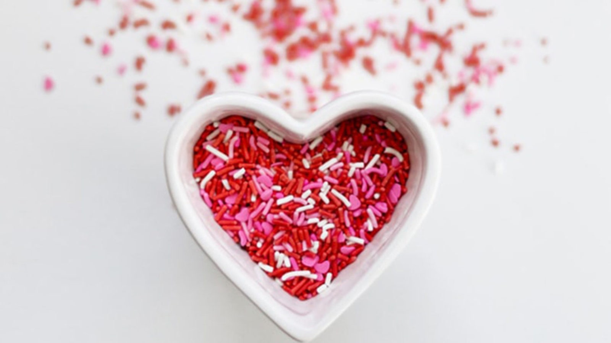
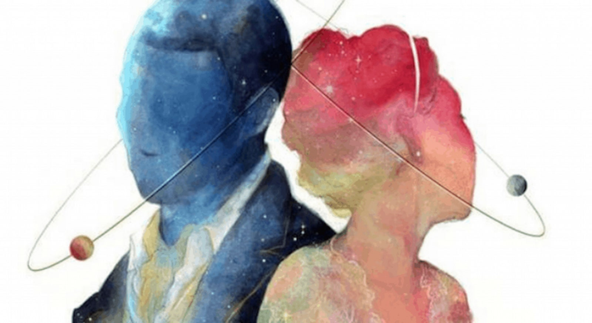

SEGURO TE IDENTIFICAS
25 de noviembre de 2021 | Por Sasha Orantes
Motivos fisiológicos
Entonces, no es de sorprendernos que seamos un poco (o bastante) adictos al amor, pues literalmente en nuestro cuerpo se genera una dependencia al bienestar que cierta persona puede estar provocando en nuestra mente. Y por eso a veces es tan difícil separarse de alguien o pasar mucho tiempo soltero.
Además de los motivos fisiológicos por los cuales somos adictos al amor y repetimos relaciones una y otra vez, incluso después de varios intentos fallidos seguramente. Y es que el amor no es algo sencillo que se dé con ligereza. En muchos casos también conlleva a bastante sufrimiento, dudas, inseguridades y otros temas complicados que las personas debemos aprender a afrontar y canalizar de manera asertiva, de preferencia con ayuda de un profesional como un psicólogo, para encontrar la mejor manera de sostener relaciones saludables y entender por qué a veces nos vinculamos en relaciones tóxicas y cómo dejar de hacerlo.
Sin embargo, incluso dentro de las relaciones donde las personas han trabajado mucho en sí mismas y están listas para dar lo mejor de sí, podemos encontrar casos en los que los celos, la inseguridad y la ausencia siguen presentes, entonces ¿por qué seguir siendo tan adictos al amor?
Como decíamos, existen motivos que van más allá de lo fisiológico, aunque esto sea uno de los principales detonadores de nuestra pasión por estar enamorados. Y es aquí donde varios pensadores y filósofos han dedicado parte de su trabajo a comprender el porqué de nuestra adicción al amor.
El amor nos complementa - Platón
El filósofo girego pensaba que necesitamos amar para sentirnos completos. En sus ideas se encuentra la propuesta mitológica de que el ser humano en un inicio era un ente de cuatro piernas y cuatro brazos, que fue dividido a la mitad y que desde entonces se encuentra en la búsqueda de su complemento, siendo esa su definición del amor.
El amor nos engaña para tener hijos - Schopenhauer
En un tono mucho menos romántico, el filósofo alemán Schopenhauer pensaba que el amor es solo un engaño de la mente para satisfacer la necesidad de nuestros cuerpos por tener hijos, creando la ilusión del enamoramiento con tal de darle sentido a esto. Es decir, lo que en realidad es una necesidad biológica, se convertía en un sentido espiritual para que las personas pudieran justificarla.
El amor es una escapatoria para la soledad - Russell
El filósofo británico Bertrand Russell, ganador del premio Nobel, al igual que varios pensadores interesantes en nuestros tiempos, creía que el amor era una herramienta para que los humanos pudieran protegerse del miedo que llega a provocar el mundo exterior. Por ejemplo, ese efecto que nos produce el poder mirar el celular por horas cuando queremos evitar alguna situación que nos preocupa en el mundo exterior, podría ser equivalente al tener una pare
Aunque quizá no exista una teoría exacta sobre por qué somos adictos al amor, lo cierto es que este fenómeno siempre va a implicar una serie de emociones que debemos aprender a navegar con respeto y sabiduría.
2do video
Intro
| 15 de agosto de 2021 |
Concepto : Es la intro actual de el canal de Ema "Cultura General" que estará bigente solo por un año. Hay unos tambores de fondo a los cuales los acompañan una guitarra electrica y ya de último se puede escuchar la voz de Aarón (El mejor amigo de Ema) y lo que dice Aarón en la intro es "QUE TE VALGA VERGA MAJE" lo cual motivo a Ema a crear un canal en YouTube y hacer su primer video.
Porque lo motivo : "Porque lo que Aarón dijo fue basicamente como "QUE NO TE IMPORTE LO QUE DIGAN LOS DEMÁS" o "SIMPLEMTE SOLO HAZLO Y ATREVETE" y me pegaron bien profundo esas palabras porque una de las cosas de las cuales la gente se arrepienten en su vida es no averlo intentado, se quedan con el "¿QUE HUBIERA PASADO SI LO INTENTAVA?, ¿ESTARÍA EN EL LUGAR QUE ESTOY AHORA MISMO?, ¿SERÍA FELIZ SI LO HUBIERA INTENTADO?" no quiero arrepentirme de nada, el día de mi muerte sabré porque viví" Dijo Ema al preguntarle por que lo inspirarón esas palabra tan sabias de Aarón.
Ver más3er video
Juego Salvar a mi hermana
| 15 de agosto de 2021 |
Concepto : Es un tutorial acerca de uno de los juegos más famosos y divertidos de juegos diarios el cual es "salvar a mi hermana".
En el video Ema da una clase de tutorial acerca de los comendos del juego y de como salvar a tu hermana, claro si es que te atreves a jugarlo.
Ver más